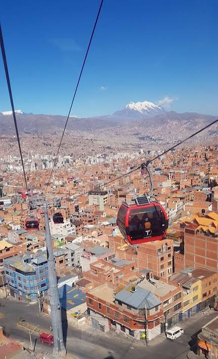
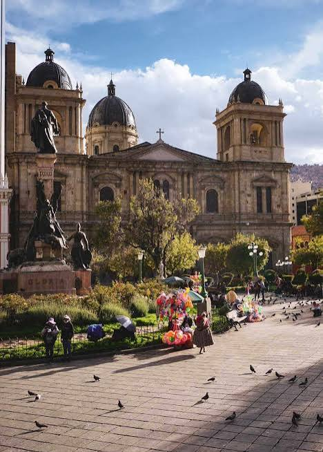
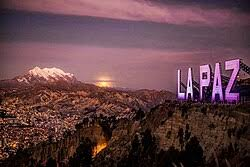
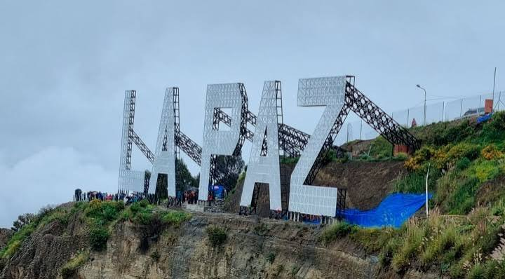

HISTORIA
El departamento de La Paz nació en homenaje a la pacificación impuesta por Pedro de La Gasca entre los españoles que luchaban entre sí, por obtener la mayor cantidad de riquezas y poder. El presidente de la Real Audiencia de Charcas, La Gasca, ordenó al capitán Alonso de Mendoza que fundara una ciudad que sirviera de enlace entre Potosí y el Bajo Perú. Mendoza escogió la iglesia de la localidad de Laja para esta fundación. Así, el 20 de octubre de 1548, junto a 10 compañeros, en el primer aniversario de la Batalla de Huarina, tuvo lugar la fundación del departamento de La Paz, con el nombre de “Nuestra Señora de La Paz”. Creación El departamento de La Paz fue fundado mediante Decreto Supremo el 23 de enero de 1826, por el Mariscal Antonio José de Sucre.
 imag1 |  imag2 |
 imag3 |  imag4 |